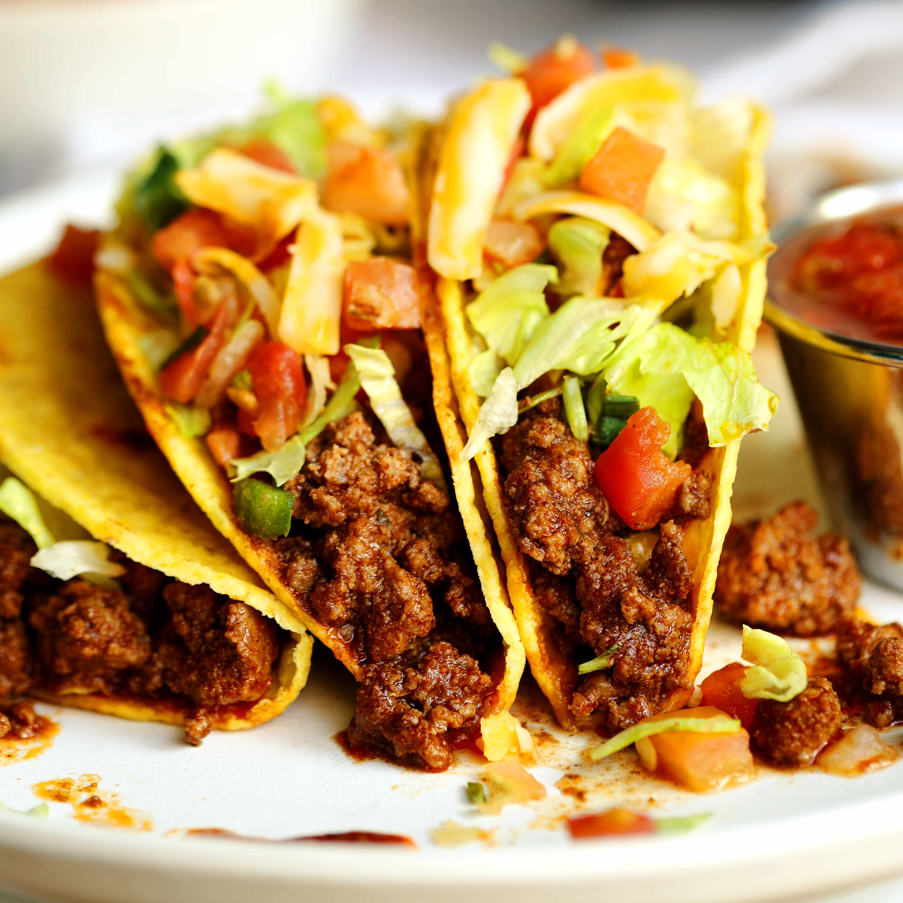

Beef Tacos

These delicious Beef Tacos are made with seasoned ground beef,
warm flour or corn tortillas, and topped with your favorite
toppings. The beef is cooked with a perfect blend of spices
including chili powder, cumin, and garlic that create an
authentic and flavorful filling. Customize them with lettuce,
tomatoes, cheese, sour cream, and salsa for the ultimate
taco experience.
Ingredients
For the Beef
- 2 pounds Ground Beef
- 1 Onion, diced
- 3 Garlic cloves, minced
- 2 Tablespoons Chili Powder
- 1 Tablespoon Cumin
- 1 teaspoon Paprika
- 1/2 teaspoon Oregano
- 1/4 teaspoon Cayenne Pepper
- 1 Tablespoon Tomato Paste
- 1/2 cup Beef Broth
- Salt and Black Pepper to taste
For Serving
- 8-10 Flour or Corn Tortillas
- Shredded Cheddar Cheese
- Shredded Lettuce
- Diced Tomatoes
- Sour Cream
- Salsa
- Diced Onion
- Fresh Cilantro
Steps
- Heat a large skillet over medium-high heat. Add the ground beef and cook until browned, breaking it up with a spoon as it cooks, about 5-7 minutes. Drain excess fat if needed.
- Add diced onion to the beef and sauté for about 3 minutes until softened. Then add minced garlic and cook for another 1 minute until fragrant.
- Stir in the chili powder, cumin, paprika, oregano, and cayenne pepper. Cook for about 1-2 minutes until the spices are fragrant and well combined.
- Add the tomato paste and stir well. Pour in the beef broth and bring the mixture to a simmer.
- Let the beef mixture simmer for about 10-15 minutes until the sauce thickens slightly. Season with salt and black pepper to taste.
- Warm the tortillas in a skillet or over an open flame for about 30 seconds on each side until they are soft and pliable.
- To assemble the tacos, place a spoonful of seasoned beef in the center of each warm tortilla. Top with your choice of cheese, lettuce, tomatoes, sour cream, salsa, onion, and cilantro.
- Serve immediately and enjoy. Make extra beef filling for anyone who wants seconds!